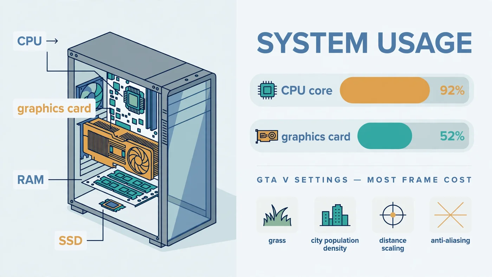

GTA V Bottleneck: Why Your FPS Stays Low — and How to Fix It
The short answer: a GTA V bottleneck is usually a CPU limit, not a weak graphics card. GTA V's open world — traffic, pedestrians, physics and streaming the city as you drive — leans hard on a few fast CPU cores, so your FPS can stay flat even when you lower the settings or own a strong GPU. This guide shows you how to prove which part is holding your frame rate back in about two minutes, which settings actually help, and what to fix first: settings, RAM and storage, or a CPU upgrade.

Why GTA V Bottlenecks Differ from Other Games
GTA V is an open-world game built on an engine from the early 2010s, and that history shapes its bottleneck. While a corridor shooter mostly asks the graphics card to draw what is in front of you, Los Santos asks the processor to simulate a living city at the same time: traffic, pedestrians, physics and the constant streaming of streets and terrain as you drive. That simulation work lands on a small number of fast CPU cores, which is why GTA V behaves differently from newer titles that spread work more evenly — and why a CPU or GPU bottleneck shows up here in a pattern players often misread as a graphics problem.
Where you play changes the limit, too. Frame rate in the countryside, where little is happening, can be far higher than in downtown Los Santos at rush hour, and a scene that runs smoothly in Story Mode can struggle in a full GTA Online lobby. That variation is normal for this game, and it is the first clue that the bottleneck is the simulation load on the CPU rather than raw drawing power. Our Fortnite bottleneck guide covers a similar CPU-first pattern.
There is also a second version to be aware of: GTA V Enhanced, released for PC in 2025, adds ray tracing, upscaling support and faster loading, but raises the hardware requirements over the older Legacy version. A PC that ran Legacy comfortably can struggle with Enhanced at the same settings, so knowing which edition you installed is part of the diagnosis.
The Two-Minute GTA V Bottleneck Test
You do not need expensive tools. Open an on-screen overlay such as MSI Afterburner, or keep Task Manager's Performance tab on a second screen, and drive a busy route through the city — not a quiet road, and not a menu — for a couple of minutes. Note four readings: per-core CPU usage, GPU usage, RAM usage and temperatures. Our step-by-step bottleneck check and guide to checking PC usage walk through the same screens.
Then run the decisive experiment: drop the resolution to 720p and turn the graphics settings to low, and drive the exact same route again. If your FPS barely moves, the CPU is the limit — making the graphics card's job easier changes nothing. If your FPS jumps sharply, the GPU is the limit, and settings and resolution are the levers that will help.
Watch per-core CPU usage, not just the overall number: a game can be CPU-limited while overall usage looks modest, because one overloaded core is the limit while the others idle.
Reading the Results: CPU Limit, GPU Limit, or Something Else
| What you see while driving through the city | What it usually means | Fix first |
|---|---|---|
| CPU core maxed out, GPU well below full load, FPS flat at low settings | CPU limit — the classic GTA V bottleneck | CPU-heavy settings, then a CPU upgrade |
| GPU near full load, CPU with room to spare, FPS rises at lower settings | GPU limit — the healthy state for a gaming PC | GPU-heavy settings, upscaling, or a faster GPU later |
| RAM near full, stutter when entering new areas | Memory limit | Second RAM stick, or more capacity |
| Hitching while driving fast, long loads | Storage limit | Move the game to an SSD |
| High temperatures, clocks dropping over time | Cooling limit | Airflow, fans, or a better CPU cooler |
Two readings deserve a second look before you act. Low GPU usage alone does not always mean a CPU bottleneck — a frame rate cap, V-Sync, or a background program can hold the GPU back too, as our low GPU usage guide explains. And a high average FPS with visible hitching is a frame time problem, covered in our frame time guide.
Why a GTA V Bottleneck Hides on a Good PC
The most confusing GTA V bottleneck symptom is also the most common: a good PC, a strong graphics card, and FPS that refuses to rise. The explanation is simple once you see the readings — the graphics card is waiting. It can only draw each frame after the CPU has finished simulating it, so when a CPU core is maxed out, a faster card or lower settings cannot produce frames any sooner.
Three impostors make this worse. First, the in-game VRAM bar: pushing texture quality past what your card's memory holds causes stutter that looks like a CPU problem, so keep an eye on that bar and leave the Ignore Suggested Limits option off unless you know your card can handle it. Second, a frame rate cap or V-Sync quietly pins FPS at your monitor's refresh rate — check those before blaming hardware, as our V-Sync and FPS cap guide explains. Third, background programs: a browser, recording tool or scan running during play can eat the CPU cores GTA V needs — see our guide to fixing 100% CPU usage if usage sits at 100% even outside games.
Finally, check which edition you are running. If your PC sits below the Enhanced edition's recommended hardware, the older Legacy version will usually run more smoothly, and Enhanced's ray tracing is the first thing to switch off in a test — see our ray tracing bottleneck guide.
The Settings That Cost the Most Frames
GTA V's settings split neatly into two groups, and knowing which group a setting belongs to is the whole trick. Lower a GPU-heavy setting when the graphics card is the limit; lower a CPU-heavy setting when the processor is the limit; lowering the wrong group wastes visual quality for no FPS gain.
| Setting | Mainly taxes | What to do first |
|---|---|---|
| Population Density and Population Variety | CPU — more people and cars to simulate | Lower one step at a time until city FPS recovers |
| Distance Scaling and Extended Distance Scaling | CPU and GPU — more world drawn and streamed | Reduce before touching texture quality |
| Grass Quality | CPU and GPU, worst in Blaine County | Drop from Ultra to High or Normal for a large saving |
| MSAA and TXAA anti-aliasing | GPU — heavily | Switch to FXAA, or turn MSAA off first |
| Texture Quality | GPU memory (VRAM) | Keep high only if the VRAM bar stays in budget |
| Reflection, Shadow and Shader Quality | GPU | Lower after MSAA if still GPU-limited |
| Ray tracing (Enhanced edition) | GPU — heavily | Turn off for one test before anything else |
Work in this order and test the same city route after each change, one setting at a time. If you are GPU-limited and still short of your target, upscaling is the next free lever — see our DLSS and FSR guide. If you are CPU-limited, no graphics setting will rescue FPS — move on to the fix order below.
GTA Online vs Story Mode: Different Bottlenecks
Story Mode is the clean baseline: the world, the traffic and the missions are all local, so its performance reflects your hardware alone. GTA Online adds up to 30 players, their vehicles and actions, and constant network synchronisation on top of the same world, so both the CPU and the connection work harder. A PC that holds a steady frame rate in Story Mode can dip in a crowded public lobby without anything being wrong with its settings.
The test that separates the two is an Invite Only session. If an Invite Only lobby runs smoothly while a full public lobby does not, the lobby load is the difference — not your graphics settings, and not a bottleneck an upgrade would fix. Keep network lag distinct from low FPS, too: high ping and rubber-banding are connection problems, while a low, stuttering frame rate is a hardware problem — see our lag vs low FPS guide.
RAM, Storage and Heat: The Limits That Look Like a GTA V Bottleneck
Not every GTA V bottleneck is the CPU or the GPU. RAM is the quiet one: with too little memory, or a single stick running in single channel, the game stutters when it streams new areas, even while CPU and GPU readings look reasonable. If RAM usage sits near full while you play, that is your limit — see our 16GB RAM guide and single vs dual channel guide.
Storage is the other disguised limit. GTA V streams the world as you drive, and a game installed on a hard drive hitches exactly when you drive fast into new territory — the classic symptom players blame on the CPU. Moving the game to an SSD removes that class of hitch, as our SSD vs HDD vs NVMe guide explains. Heat is the third: a dusty case or struggling cooler lets the CPU or GPU throttle under sustained load, so FPS falls the longer you play — see our thermal throttling guide.
Fix Your GTA V Bottleneck in Order
- Run the two-minute test. Per-core CPU usage, GPU usage, RAM and temperatures on a busy city route, then the same route at 720p and low settings. Name the limit before changing anything.
- Fix the free impostors. Frame rate caps, V-Sync, background programs, and the edition check — Enhanced versus Legacy — from the sections above.
- Lower the right settings, one at a time. CPU-heavy settings for a CPU limit, GPU-heavy settings for a GPU limit, testing the same route after each change.
- Update drivers and verify game files. A fresh graphics driver from the GPU manufacturer and a file verification through your launcher rule out the two most common software causes after a game update.
- Fix RAM and storage. Two matched RAM sticks in dual channel, enough capacity, and the game on an SSD — before considering a processor or graphics card.
- Smooth what is left. Cap FPS slightly below your monitor's refresh rate for steadier frame times, and use DLSS or FSR in Enhanced if you are GPU-limited.
Only after these steps does an upgrade enter the conversation — and by then you know exactly which part to buy. Our general bottleneck fix guide and PC upgrade checklist offer a second pass.
When an Upgrade Is the Real Answer
A CPU upgrade is the right answer when the test is unambiguous: a CPU core maxed out, FPS flat at 720p and low settings, and the free fixes already tried. For GTA V, favour strong single-core speed over a core count the game will not use — beyond a modern six-core chip, extra cores buy little here, while faster cores buy frames in the city. Check any candidate pairing on the PC Bottleneck Calculator at your real resolution first, and read what a good bottleneck percentage means so a small number does not send you shopping.
A graphics card upgrade is the right answer only when the GPU is genuinely the limit: near full load, FPS climbing at lower settings, and settings plus upscaling already exhausted. If that is your pattern, our CPU and GPU pairing guide and best CPU for the RTX 4070 guide show how to pick a balanced combination rather than a card your processor cannot feed. If both CPU and GPU need replacing, add up the full cost — motherboard and RAM included — before committing.
Free PC Bottleneck Calculator — Estimate CPU and GPU balance for your resolution and workload: check whether your CPU or GPU is the slow half of the frame on the PC Bottleneck Calculator (see its methodology page) before you buy an upgrade for GTA V.
Conclusion
A GTA V bottleneck is usually found, not assumed: run the two-minute test, and the readings will tell you whether the CPU, the GPU, RAM, storage or a simple cap is holding your FPS back. Lower the settings that tax the limiting part, fix RAM and storage before buying hardware, and only upgrade the part your measurements name. To check your exact pairing first, try the free PC Bottleneck Calculator.
Frequently Asked Questions
Why is GTA V FPS so low on a good PC?
The most common reason is a CPU limit: GTA V leans hard on a few fast CPU cores to run traffic, pedestrians, physics and world streaming, so the graphics card ends up waiting for the processor and FPS stays flat even when you lower graphics settings. Check per-core CPU usage against GPU usage while driving through the city — a maxed-out core with a half-used GPU is the signature of this limit.
Is GTA V CPU or GPU intensive?
Both, but the CPU usually sets the ceiling first. The processor handles the open world — traffic, pedestrians, physics and streaming — while the graphics card handles resolution, textures, shadows and anti-aliasing. That is why a strong GPU can still sit half-used in the city, and why raising resolution or anti-aliasing hurts FPS only once the GPU becomes the limit.
Why does GTA V stutter even with high FPS?
Stutter with a high average FPS is a frame time problem, not an average FPS problem: brief spikes when the game streams new parts of the world, runs out of RAM, or loads from a slow drive feel like hitches even while the headline number looks fine. Lowering distance scaling and grass quality, moving the game to an SSD, and capping FPS slightly below your monitor refresh rate usually smooth those spikes out.
Does lowering GTA V settings increase FPS?
Only the settings tied to the part that is actually limiting you. If the GPU is the limit, lowering texture quality, MSAA, reflections or ray tracing raises FPS. If the CPU is the limit, graphics settings barely move FPS at all — instead lower population density, population variety, distance scaling and grass quality, which reduce the work the processor has to do.
Why is GTA V lagging in Online but smooth in Story Mode?
GTA Online adds up to 30 players, their vehicles and actions, and network synchronisation on top of the same open world, so the CPU and the connection both work harder than in Story Mode. Test an Invite Only session: if that runs smoothly while a full public lobby does not, the lobby load — not your graphics settings — is the difference, and network lag is a separate problem from low FPS.
Sources
Official documentation referenced in this guide: